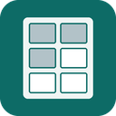

Label Sheet Keeper for Word
A Word side panel that remembers which labels on a sheet are used, so you can finish partly used sheets.
Set it up on your Mac (once)
- Download manifest.xml
- Quit Word.
- In Finder, press ⌘⇧G and go to
~/Library/Containers/com.microsoft.Word/Data/Documents/ - If there's no folder named
wef, make one (File › New Folder). - Put
manifest.xmlinsidewef. - Open Word and any document. Click Label Sheet on the Home tab. If it isn't there, click Add-ins on the Home tab and choose Label Sheet Keeper.
Use it
- In the panel, choose your labels and click Make the sheet. Save the new document.
- On the map, click each label that's already peeled off your sheet.
- Fill labels: copy one you typed, place an address with a design, or open the table window to fill many at once.
- Print with ⌘P at 100% scale. Feed the sheet top edge first, print side up, and choose Labels as the paper type. The panel notices and marks those labels used.
On shipping label sheets, the panel can also put an Amazon return label PDF or any label picture on the next open label. It finds the label's border by itself.
About partly used sheets: Avery says laser label sheets should go through a laser printer only once, because the heat softens the glue. The panel counts each sheet's trips through the printer, warns before a second trip, and helps you use up a sheet on its last trip.
Address suggestions (optional)
In the table window, a ZIP code or Canadian postal code fills in the city and state or province on its own. With a free Geoapify key, it also suggests full US and Canadian addresses as you type a street.
- Go to geoapify.com and sign up for a free account. No credit card is needed; the free plan includes 3,000 lookups a day.
- Create a project and copy its API key.
- In the key's settings, limit it to requests from this add-in by adding
https://therearenousernamesleft.github.ioas an allowed origin (or HTTP referrer). Then the key won't work on other websites. - In Word, open the panel, then Settings › Address suggestions. Paste the key and click Save key. The panel checks it with Geoapify.
The key is kept by the panel on your Mac only. It isn't in this project's code or in your Word documents. Each time you pause while typing a street, the panel sends what you typed and the key to Geoapify to get suggestions. If you use Word on another Mac, paste the key there too.
Canadian addresses are written the way Canada Post asks: 5-123 Main St for a unit and Toronto ON M5V 3L9 on the last line. Mail to Canada gets a CANADA line. If you mail from Canada, choose Settings › You mail from › Canada, and US addresses get a USA line instead.
Label sizes
- 1″ × 2⅝″, 30 per sheet (Avery 5160 laser, 8160 inkjet). Blank sheet
- ½″ × 1¾″, 80 per sheet (Avery 5167 laser, 8167 inkjet). Blank sheet
- 2″ × 4″, 10 per sheet (Avery 5163 laser, 8163 inkjet). Blank sheet
- 3⅓″ × 4″, 6 per sheet (Avery 5164 laser, 8164 inkjet). Blank sheet
- Shipping labels, 2 per sheet, shown sideways (Avery 5126 laser, 8126 inkjet). Blank sheet
- 8½″ × 11″, 1 per sheet (Avery 5165 laser, 8165 inkjet). Blank sheet
Use the laser version of a label on a laser printer. To add a size, use Add your own size in the panel, or edit formats.js in the GitHub repository.